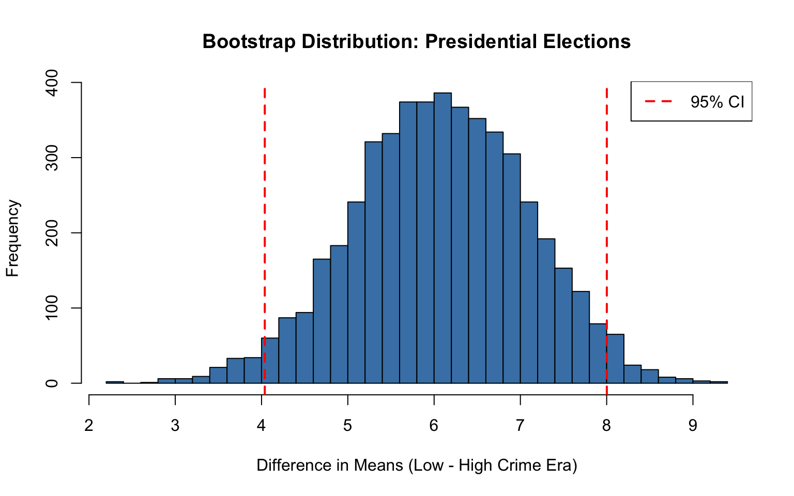
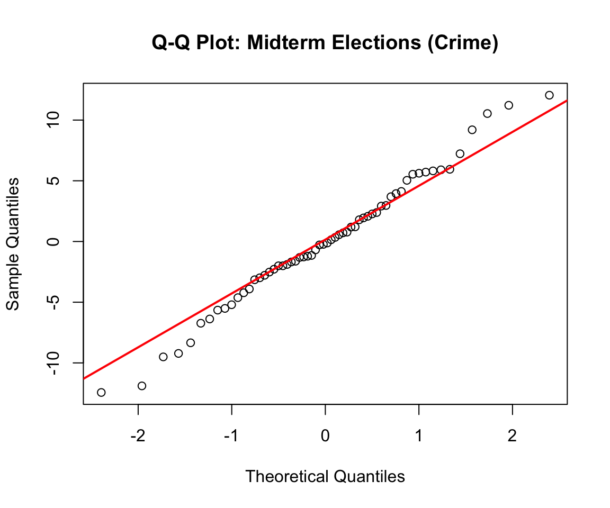

We conducted multiple tests (ANOVA, Bonferroni t-tests, and bootstrap) for the crime data to examine if there are significant relationships between voter turnout and violent crime rates. The voter turnout data is split between Presidential and Midterm election cycles.
Research Question: Does an increase/decrease in crime lead to an increase/decrease in voter turnout, or does crime have no effect on turnout?
Presidential Turnout and Violent Crime
One-Way ANOVA and Post-Hoc Testing
Violent crime rates were divided into tertiles (low, medium, high) as the independent variable, with normalized voter turnout as the dependent variable.
Code
# Categorize into tertilescrime_voter_pres <- crime_voter_pres %>%mutate(violent_crime_group =ntile(violent_crime_rate, 3))# Run ANOVAanova_pres <-aov(normalized_vep_turnout ~factor(violent_crime_group), data = crime_voter_pres)anova_results_pres <-summary(anova_pres)
Assumption Testing:
Code
# Q-Q plotqqnorm(residuals(anova_pres), main ="Q-Q Plot: Presidential Elections (Crime)")qqline(residuals(anova_pres), col ="red", lwd =2)
Figure 3: Q-Q Plot - Presidential Voter Turnout by Violent Crime Group
Code
# Levene's test for homogeneity of variancelevene_pres <-leveneTest(normalized_vep_turnout ~factor(violent_crime_group), data = crime_voter_pres)tibble(Test ="Levene's Test",`F-statistic`=round(levene_pres$`F value`[1], 4),df1 = levene_pres$Df[1],df2 = levene_pres$Df[2],`p-value`=round(levene_pres$`Pr(>F)`[1], 4)) %>%kable(caption ="Homogeneity of Variance Test (Presidential)") %>%kable_styling(bootstrap_options =c("striped", "hover"), full_width =FALSE)
Homogeneity of Variance Test (Presidential)
Test
F-statistic
df1
df2
p-value
Levene's Test
0.4757
2
56
0.6239
Levene’s test p-value: 0.6239 (equal variances confirmed)
There is a statistically significant difference between medium-crime and high-crime groups. Normalized voter turnout is approximately 4.35 percentage points higher in medium-crime elections than in high-crime elections.
Bootstrap Analysis: High- vs. Low-Crime Eras
Violent crime rates show a clear temporal distinction before and after 2001. We applied bootstrap resampling to compare mean normalized voter turnout between:
High-crime era: 1986–2000
Low-crime era: 2001–2024
Code
# Read crime data including United Statescrime_all <-read_csv("data/processed-data/crime_data_yearly_clean.csv") %>%filter(!(State =="Florida"& Year ==1988))# Plot with all states including United Statesggplot(crime_all, aes(x = Year, y = violent_crime_rate, color = State)) +geom_line(linewidth =1.0) +scale_color_manual(values =c("United States"="black","California"="#E69F00","Florida"="#F0E442","Michigan"="#56B4E9","New York"="#CC79A7","Ohio"="#009E73","Utah"="#D55E00" )) +labs(title ="Violent Crime Breakdown by Offense Type",x ="Year",y =NULL ) +theme_minimal() +theme(plot.title =element_text(face ="bold", size =14),legend.position ="top",legend.title =element_blank(),panel.border =element_rect(color ="black", fill =NA, linewidth =1),panel.grid.minor =element_blank() )
hist(boot_diff_pres, breaks =30,main ="Bootstrap Distribution: Presidential Elections",xlab ="Difference in Means (Low - High Crime Era)",col ="steelblue", border ="black")abline(v = ci_pres, col ="red", lty =2, lwd =2)legend("topright", legend ="95% CI", col ="red", lty =2, lwd =2)

Figure 5: Bootstrap Distribution of Mean Presidential Turnout Difference (Low – High Crime Era)
Using 5,000 bootstrap resamples, we estimated the mean difference and constructed a 95% confidence interval.
Bootstrap Results:
95% CI: [4.04, 8]
Conclusion: Reject null hypothesis
Presidential elections during the low-crime era exhibit approximately 4.04 to 8 percentage points higher normalized voter turnout compared to elections during the high-crime era.
Midterm Turnout and Violent Crime
One-Way ANOVA
Code
# Categorize into tertilescrime_voter_midterm <- crime_voter_midterm %>%mutate(violent_crime_group =ntile(violent_crime_rate, 3))# Run ANOVAanova_midterm <-aov(normalized_vep_turnout ~factor(violent_crime_group), data = crime_voter_midterm)anova_results_midterm <-summary(anova_midterm)
Assumption Testing:
Code
# Q-Q plotqqnorm(residuals(anova_midterm), main ="Q-Q Plot: Midterm Elections (Crime)")qqline(residuals(anova_midterm), col ="red", lwd =2)

Figure 6: Q-Q Plot - Midterm Voter Turnout by Violent Crime Group
Code
# Levene's testlevene_midterm <-leveneTest(normalized_vep_turnout ~factor(violent_crime_group), data = crime_voter_midterm)tibble(Test ="Levene's Test",`F-statistic`=round(levene_midterm$`F value`[1], 4),df1 = levene_midterm$Df[1],df2 = levene_midterm$Df[2],`p-value`=round(levene_midterm$`Pr(>F)`[1], 4)) %>%kable(caption ="Homogeneity of Variance Test (Midterm)") %>%kable_styling(bootstrap_options =c("striped", "hover"), full_width =FALSE)
Homogeneity of Variance Test (Midterm)
Test
F-statistic
df1
df2
p-value
Levene's Test
1.2962
2
57
0.2815
Levene’s test p-value: 0.2815 (equal variances confirmed)
Q-Q plot: approximate normality with minor tail deviations
One-Way ANOVA: Violent Crime and VEP Turnout Rate (Midterm)
Source of Variation
df
F-statistic
p-value
Violent Crime Group
2
0.446
0.642
The ANOVA was not statistically significant (p = 0.642). We fail to reject the null hypothesis. Midterm voter turnout does not differ meaningfully across violent crime rate groupings.
Bootstrap Analysis: High- vs. Low-Crime Eras
Using the same framework as presidential elections: